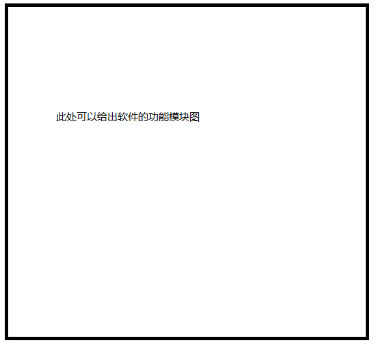
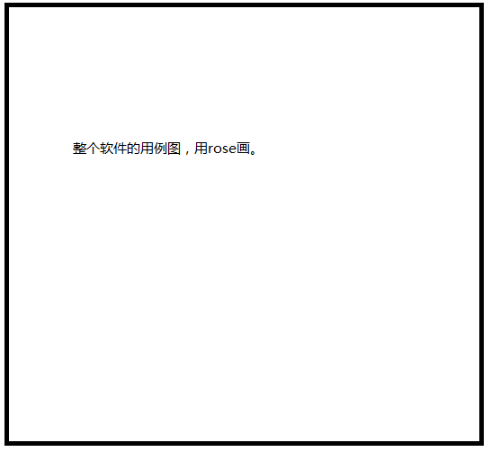

用户群组管理、权重统计
需求规格说明书
绝密 | 归属部门： | 策划分中心 | |
产品名： | 中学学科网 | 子系统名： | 用户群组管理、权限统计 |
编写人： | 田芳 | 编写日期： | 2016-10-08 |
北京凤凰学易科技有限公司
修订记录
版本号 | 修订人 | 修订日期 | 修订描述 |
V1.0 | 田芳 | 2016-09-30 | 第一次撰写完成 |
V2.0 | 田芳 | 2016-10-08 | 第一次修改完成 |
V3.0 | 田芳 | 2016-10-12 | 第二次修改完成 |
V4.0 | 田芳 | 2016-10-17 | 第三次修改完成 |
V5.0 | 田芳 | 2016-10-18 | 第四次修改完成 |
目录
指出编写《需求规格说明书》的目的。下面是示例：
编写此文档的目的是进一步定制软件开发的细节问题，希望能使本软件开发工作更具体。为了使用户、软件开发者及分析和测试人员对该软件的初始规定有一个共同的理解，它说明了本软件的各项功能需求、性能需求和数据需求，明确标识各项功能的具体含义，阐述实用背景及范围，提供客户解决问题或达到目标所需要的条件或权能，提供一个度量和遵循的基准。具体而言，编写软件需求说明的目的是为所开发的软件提出：
a) 软件设计总体要求，作为软件开发人员、软件测试人员相互了解的基础。
b) 功能、性能要求，数据结构和采集要求，重要的接口要求，作为软件设计人员进行概要设计的依据。
c) 软件确认测试的依据。
指明该《需求规格说明书》的依据。一般可以写依据XXX软件的方案书，策划书等。
缩写、术语及符号 | 解 释 |
|
|
|
|
|
|
从总体上描述该软件的情况，包括软件的形式（网站，运行时系统，插件等）和软件的主要的功能，使读者对该软件有一个整体的认识。一般一两段话即可。
软件设计的约束以及有关说明如下所示。
开发环境：
编程语言：
遵循的规范：软件的设计和开发过程需要严格按照合同要求，根据软件的设计方案来进行。软件开发过程应遵循软件工程规范，对过程和版本进行管理和控制。
测试环境：可以写明在什么单位测试，测试单位使用的软硬件环境。
软件交付形式：
软件交付日期：
其他：见合同。
指明软件的使用者具有的特定。示例：
本软件主要在甲方工作环境中使用，使用者包括项目管理人员，开发人员及工程师等，使用者在计算机的应用、使用上不存在障碍，都在计算机的操作和使用方面得到过相关的培训。
XXX软件的运行环境为个人计算机。详细要求见表3. 1。
表3. 1 软件运行环境硬件要求
需求名称 | 详细要求 |
CPU |
|
内存 |
|
硬盘 |
|
需求名称 | 详细要求 |
操作系统 |
|
… |
|
… |
|
… |
|
… |
|
3.3.1 外部接口
说明软件运行时和外部环境的接口，包括软件的界面表现形式等方面。示例：
外部接口的用户界面部分按Windows应用软件用户界面的规范来设计，界面设计风格与XXX环境保持一致，采用XXX以及对话框等方式作为用户界面，便于用户使用。
3.3.2 软件接口
说明软件与它运行的软件环境之间的接口。示例：
本软件运行于XXX软件及以上版本上，整个环境需要运行在Windows某某版本及更高版本并装有XXX（依赖软件）的操作系统之上。
3.3.3 硬件接口
指明软件和运行的硬件环境的接口。
Inter或其他系列的微型计算机，内存XXXG以上，硬盘XXXG以上。
3.3.4 内部接口
说明软件内部各个模块之间的接口或规范，软件各个模块间数据交换的格式等。示例：
软件内部的接口是通过XXX来进行交换的。用户使用XXX软件……可以说软件的各个模块之间主要通过XXX来进行关联，传送数据并交换信息，从而降低软件模块间的耦合程度。
说明使用软件时需要进行的控制和操作方式。示例：
XXX软件最终交付形式为XXX。控制该软件运行的方法为通过鼠标双击或命令行启动XXX环境，然后通过鼠标启动XXX。
XXX软件提供XXX等功能，各个功能项的设置及使用应符合人们使用计算机的操作习惯，通过常用的鼠标点击，键盘输入以及菜单等形式来完成启动和使用软件的过程，控制信号均由鼠标和键盘进行输入。
4.1.1 精度要求
要按照严格的数据格式输入，对符合数据格式要求的输入进行提示。
4.1.2 时间特性要求
软件启动时间：
系统实时响应时间：软件使用过程中，对用户在各个功能模块的鼠标点击、键盘输入等操作事件的响应时间需在用户能够容忍的范围之内，一般要求小于1秒。
数据的转换和传送时间：对软件不同模块间的数据交互，要求数据的转换和传送时间不得超过XXX。
数据更新时间：XXX。
4.1.3 灵活性要求
XXX软件能够支持鼠标、键盘等多种操作方式的使用。软件的设计和实现需要考虑到运行环境的变化，并能够在运行环境变化的情况下正常使用。同时，软件需要兼容其他软件接口的变化，以保证在不同运行环境，不同软件接口的情况下的正常使用。具体要求如下：
操作方式上的变化：软件应支持多种操作方式，例如鼠标、键盘和菜单等。
运行环境的变化：软件的设计和实现需要考虑其运行环境的变化，并能对不同的运行环境提供支持。具体而言，软件应支持Windows某某版本及以上版本的操作系统，支持XXX环境。
同其他软件接口的变化：当其他软件的接口发生变化时，XXX软件应能够适应接口的变化。
精度和有效时限的变化：灵活性要求软件能够方便的适应精度和有效时限的变化。
计划的变化或改进：软件应具有足够的灵活性，以适应将来有可能会出现的需求更改或增加。
经过多次需求调研，现提出XXX软件的功能需求。XXX软件包括XXX、XXX等等模块，软件的组织结构图如图4. 1所示。

图4. 1XXX软件研究内容

图4. 2软件用例图
XXX软件的主要功能模块划分，以及各个模块主要的功能描述见表4. 1所示。
表4. 1XXX软件功能模块
XXX软件 | 模块名称 | 功能描述 |
XXX模块 |
| |
XXX模块 |
| |
XXX模块 |
| |
XXX模块 |
| |
XXX模块 |
| |
XXX模块 |
|
下面以分节的形式，详细介绍软件的各个功能模块，每个功能模块占一节，如4.2.1,4.2.2等等。在介绍每个功能模块时，首先给出该模块功能的总体描述，然后给出本模块的用例图，然后，在本小节内部，再往下分一级标题，分不同的点来介绍本模块的各个功能。
4.3.1 数据采集的要求：
输入源：手工键盘输入；
输入介质和设备：键盘，鼠标；
4.3.2 数据输出要求：
输出介质和设备：显示器、文件；
在使用软件的过程中，当出现计算机断电，计算机内存不足等情况时，XXX软件将出现运行故障。运行故障发生时，软件的各个功能模块将无法正常使用，启动相关功能按钮都无法进行正常的操作。
对由于计算机断电引发的软件运行故障，用户在重新给计算机供电后，可以通过重新启动计算机，并启动XXX软件的方式恢复软件的正常运行与使用。对由于计算机内存不足引发的软件运行故障，建议暂时关闭软件。用户应检查并解决计算机内存不足的问题，内存使用情况正常后，XXX软件将恢复正常的运行与使用。
出现软件运行故障并进行修复后，应确保XXX软件功能的完整性，不能发生因软件运行故障而导致工具无法继续使用的情况。
在软件的使用过程中，如果出现软件使用故障，应当具有报警信息提示。
1) 当软件依赖的文件损毁或丢失时，软件以对话框的形式进行提示，报告损毁或丢失的文件等相关错误，以帮助用户及时修复软件的正常功能。
2) 对软件需要用户输入项的情况，如果发生缺少输入项、输入项格式错误或不符合规则等情况，软件应以合理的方式予以提示。
3) 为了防止用户由于未及时保存而导致信息丢失的情况，软件提供定时保存机制，每隔一定时间自动对信息进行保存，从而保证用户数据的安全。
1) 软件的功能实现必须符合常用的主流XX软件的使用方法和操作习惯。
2) XXX工具的需要满足操作简单的要求，能够使用户没有障碍的使用该工具进行一系列的开发工作。
3) 要求可配置型强，便于使用者对工具的使用以及定制。
4) 采用可行、合理、高效的方式进行开放性的设计和实现。
5) 软件具有很强的适应能力，并且便于维护，不仅能很好的满足当前的需求，而且应当为后期可能的开发的工作提供很好的扩展和维护接口。
作为一款XXX，XXX软件的设计和实现遵循易用性原则，工具的安装和入门，工具的用户界面布局，使用工具的操作方式等方面都应符合主流XX软件的设计风格与要求。
1) 操作简单，设计合理。
2) 进行XXX时，XX提供XXX等功能，以实现XXX。
3) 使用XXX的过程中应有必要的操作提示信息。
为了对软件的安装和使用进行统一的管理，安装XXX后，需要的到管理人员的授权才能使用该工具。软件采用激活码-注册的方式达到这一要求。启动并使用软件时，应对软件的授权信息进行检查，缺少授权信息情况软件将自动关闭。